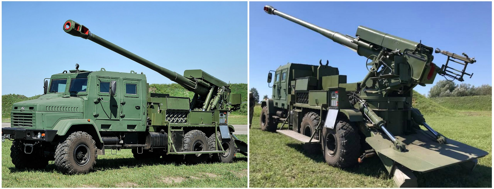
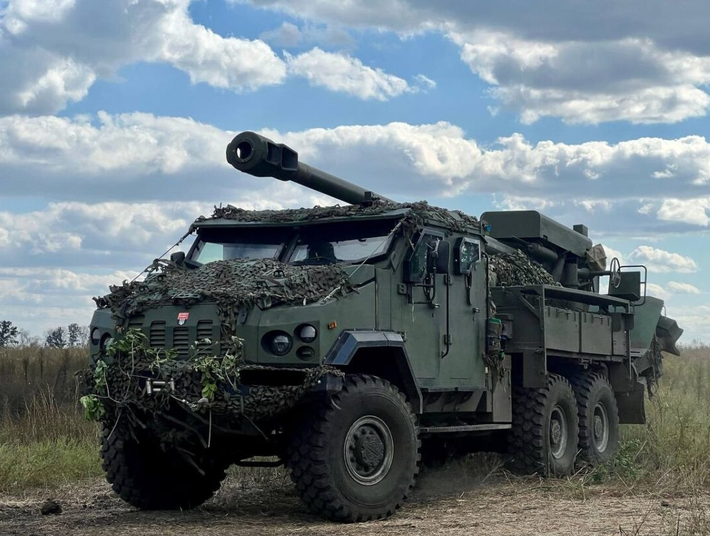
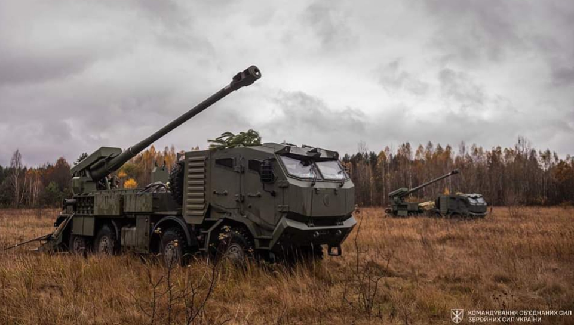

Прототип української колісної САУ

Розробку в Україні артилерійської системи 2С22 «Богдана» почали у 2016 році на Краматорському заводі важкого верстатобудування. Дослідний зразок встановили на вітчизняне колісне шасі КрАЗ-63221 з колісною формулою 6х6, створене за спеціальними технічними вимогами.
У такому варіанті прототип САУ вперше показали у липні 2018 року, а вже 24 серпня того ж року вона брала участь у військовому параді до Дня Незалежності України. Заявлена споряджена маса дослідного зразка «Богдани» – 28 тонн. Її екіпаж складається із п’яти військовослужбовців. Швидкість руху трасою – 80 км/год., а перетнутою місцевістю – 30 км/год., запас ходу – 800 км (300 км – перетнутою місцевістю).
САУ «Богдана» пересіла на шасі МАЗ

У пошуках нового шасі
для пришвидшення виробництва перших
серійних артилерійських установок «Богдана» було обрано білоруські
МАЗ-6317. Варто зазначити, що українські компанії не купують ці
вантажівки з початку 2022 року, однак певна кількість таких машин була
на складах.
САУ має цифрову радіостанцію
та інші засоби
зв’язку. Заявлено, що артустановка оснащена системою обміну даними.
Імовірно, під цим терміном мають на увазі автоматизовану систему
управління «Кропива» або «Дельта». Також, за словами розробників,
«Богдана» оснащена навігаційною системою та бортовою системою
управління вогнем.
«Богдана» на шасі Tatra

Згодом українські військові отримали «Богдани» на чеському чотиривісному шасі Tatra T815-7 з бронекабінами від виробника. За даними «Економічної правди», Міноборони України виділило ці автомобілі з власних складів, вони були закуплені ще до широкомасштабного російського вторгнення.
Судячи з зображень, вона також має броньовану кабіну з капотом, яка зовні схожа на ту, яку встановлювали на варіанті артустановки на шасі МАЗ від компанії «Українська бронетехніка». Чотирьохдверна дворядна кабіна розрахована на перевезення екіпажу самохідної установки з п’яти військовослужбовців. Ця модифікація вітчизняної колісної САУ використовує шасі чеської вантажівки Tatra Phoenix з колісною формулою 8×8.
Доповнення
- Для захисту в першу чергу від ворожих ударних FPV-дронів екіпажі самохідних гаубиць «Богдана» оснащують установки навісними захисними екранами з металевої сітки.
- Конструкції прикривають важливі частини – лобову і верхню частину кабіни, де знаходиться водій та обслуга гаубиці, капот над двигуном, а також місця зберігання возимого боєкомплекту зі 155-мм снарядів та порохових метальних зарядів.
- У вересні 2024 року посол Євросоюзу в Україні Катаріна Матернова розповіла, що з першого траншу з доходів від заморожених російських активів, який ЄС спрямував на зброю для України, 400 мільйонів євро скерували на фінансування українських оборонних підприємств.
- Більше про САУ "Богдана"